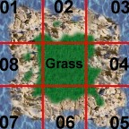
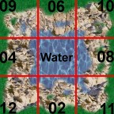
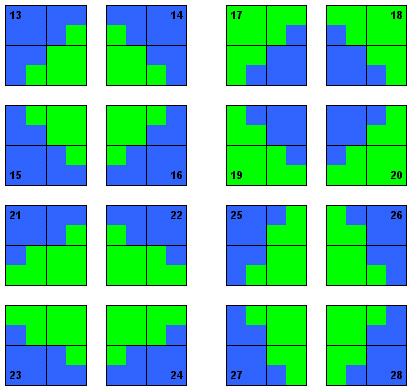

|
| |
| Themeability: | |
|
All of Boson's graphics will be completely themeable. That means not only that you can change "skins" whenever you like, but it also means that you can combine different themes in one game. There are two kind of themes : ground themes to change the look of the place you're fighting on, and species themes so that every player may choose his specy.Currently, only one ground theme ("earth") and two species themes ("human_red", "human_blue") are available. To give others a possibility to start creating themes before Boson is released and to make themes-creation in general easier, this page describes the file formats, directory structures and naming conventions. | |
| Directory structure : | |
|
The best way to understand the tree structure and the naming convention is of course to download and unzip the boson-pics-*.tgz file and have a look at it. Subdirectory of {$KDEDIR}/share/apps/boson/themes
| |
| File formats and other specifications: | |
| |
| Transitions: | |
|
Boson's standard theme has four different grounds (grass, desert, water and deep water). To use all these grounds, we need to create transitions between them (beach between grass and water). | |
| Naming Conventions for Transitions: | |
|
The transitions for the grounds have the following naming : "[GroundA]_[GroundB].[position].[version].bmp" For example: grass_desert.01.00.bmp grass_water.05.01.bmp water_desert.09.02.bmp water_water.12.03.bmp The version is a number between 00 and 03. There are four versions of every transition, to avoid a tiling - effect. The position - numbers are defined in the following pictures:  There are also transitions that use a size of 2x2 sprites (96x96 pixels). Here are the position definitions:  |